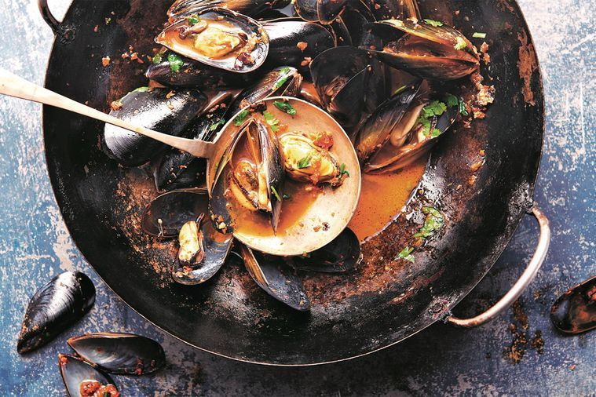

Stir-Fried Mussels

“This chilli sauce is made with fresh chillies. It's delicious and
addictive and goes with just about any dish.”
INGREDIENTS
- 2 tbs vegetable oil
- 2 tbs chilli sauce (recipe below)
- 80ml Chinese rice wine (shaohsing)
- 2 tbs black beans, roughly mashed
- 1 tbs light soy sauce
- 1 kg mussels, de-bearded and scrubbed
- 1 bunch coriander, roughly chopped
- Steamed rice, to serve
- 24 large chillies, end trimmed and roughly chopped (about 200g)
- 6 garlic cloves, chopped
- 10cm piece fresh ginger, peeled, chopped
- 125ml vegetable oil
- 2 bs light brown sugar
- 3 tbs light soy sauce
METHOD
-
For the chilli sauce, place the fresh chillies, garlic and ginger in a
food processor and whiz to a finely chopped paste. Heat the oil in a
wok over medium-high heat. Add the chilli paste and stir-fry for 3
minutes or until softened and aromatic. Stir in the brown sugar and
cook for 1 minute or until the sugar has completely dissolved in the
paste. Add the soy sauce and cook for 1 minute, then remove from the
heat. Leave to cool, then transfer to a clean glass jar. Serve
straight away or keep covered in the fridge for up to 1 week.
-
Meanwhile, heat the oil in a wok over high heat. Add the chilli sauce
and stir-fry for just a few seconds to flavor the oil. Add the rice
wine and cook for a few seconds.
-
Add the black beans, soy sauce and 360ml water and bring to the boil.
Add the mussels, cover the wok and cook for about 5 minutes or until
the mussels start to open. Discard any that remain unopened.
-
Stir through half the coriander and remove from the heat. Transfer to
a large bowl and scatter over the remaining coriander. Serve with the
steamed rice.